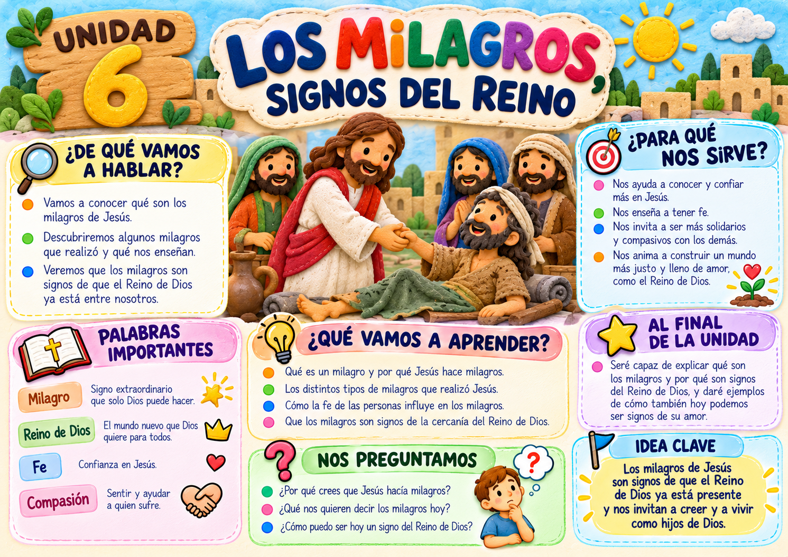

Todos los contenidos y actividades están reunidos en este PDF.
Abrir PDF de la unidad →⭐ RETO DE LA UNIDAD
Las enseñanzas de Jesús nos animan a actuar con generosidad. Hoy realiza una buena acción sin buscar premios ni reconocimiento. 💛 Mi misión: ¡que mis acciones hablen de mi corazón!